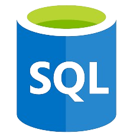
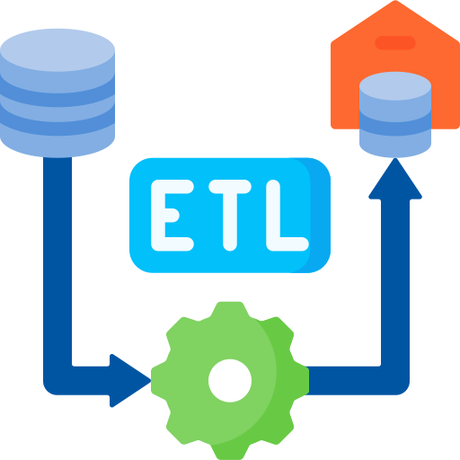
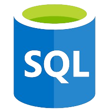
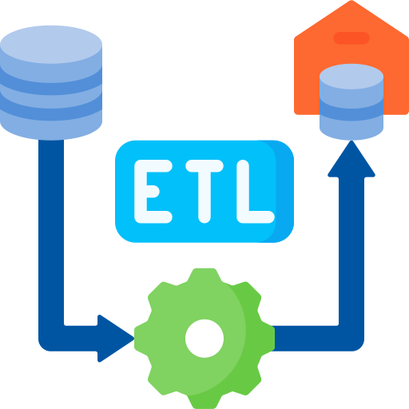
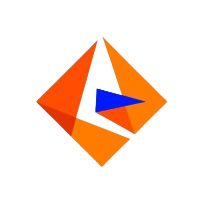
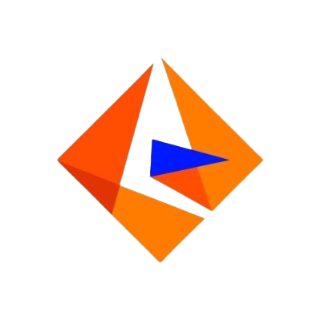

A bit about me
Hi, I'm Sameer Enjapuri, a detail-oriented and results-driven data engineer and analyst with over 5 years of experience in designing, building, and optimizing data pipelines. My expertise lies in ETL processes, data integration, and visualization, which I've honed through various roles and projects.
I'm currently pursuing a Master of Science in Business Analytics and Information Systems at the University of South Florida, where I'm expected to graduate in May 2025 with a CGPA of 3.87/4. I also hold a Bachelor of Engineering in Electronics Engineering from Shah & Anchor Kutchhi Engineering College.
My technical skill set includes Python, R, C, SQL, HTML, CSS, and various databases like Oracle, MySQL, PostgreSQL, and MongoDB. I am proficient with tools such as GitHub, Jenkins, Docker, and AWS, and I excel in data visualization using Tableau, MS Power BI, and Looker Studio. Additionally, I have extensive experience with ETL pipelines and Kafka.
I'm currently working on a project at the University of South Florida where I lead the development of comprehensive reports using Tableau to analyze economic performance in the Tampa Bay area. In my previous role at Capgemini, I developed real-time data integration solutions using Confluent Kafka and Python, significantly enhancing data streaming efficiency and decision-making processes for a banking client.
I'm passionate about leveraging data to drive strategic decisions and improve operational efficiency. Whether it's through building advanced ETL pipelines, optimizing database performance, or creating insightful visualizations, I strive to make data accessible and actionable for stakeholders across disciplines.
 



 
